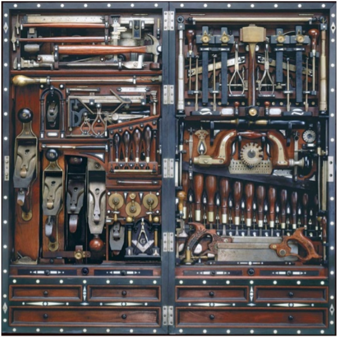
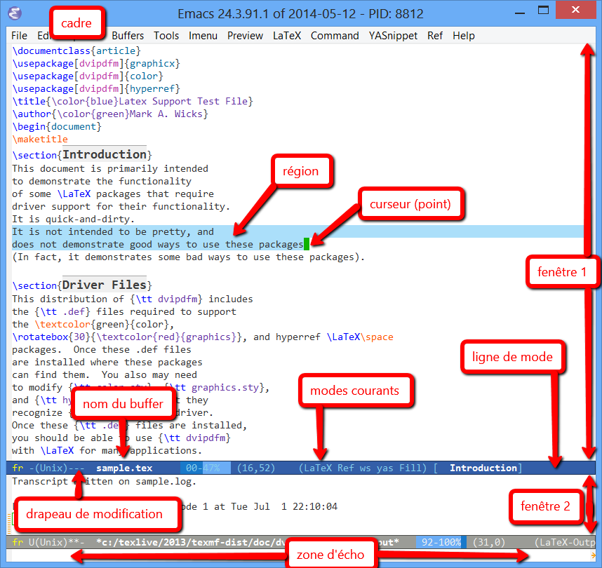
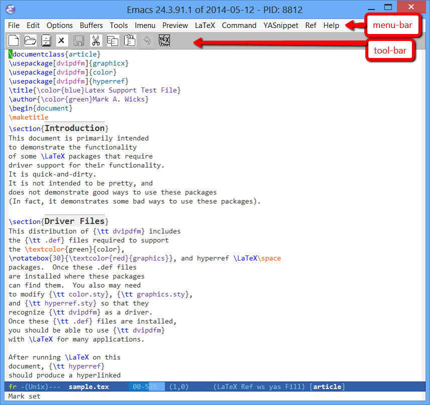
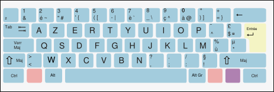
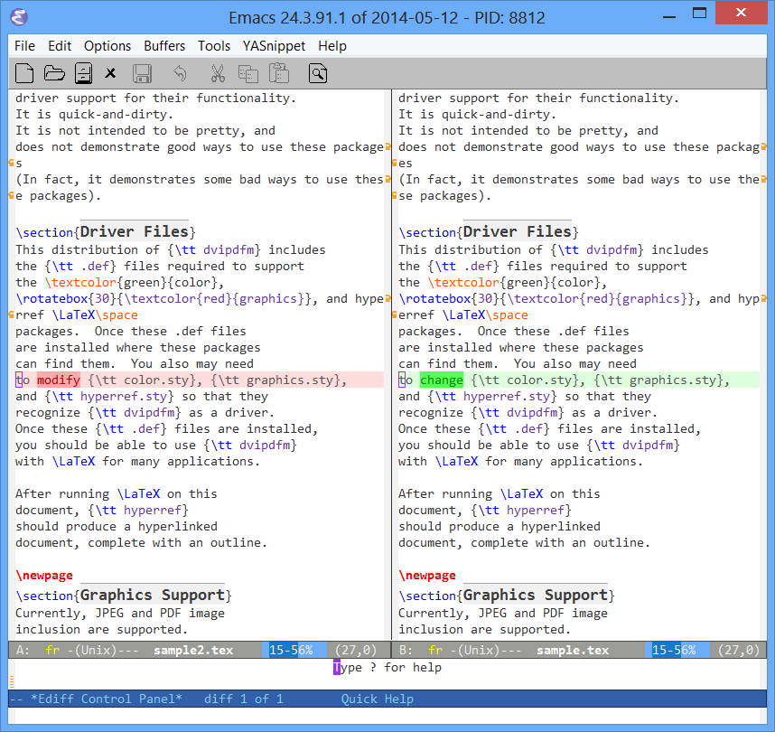
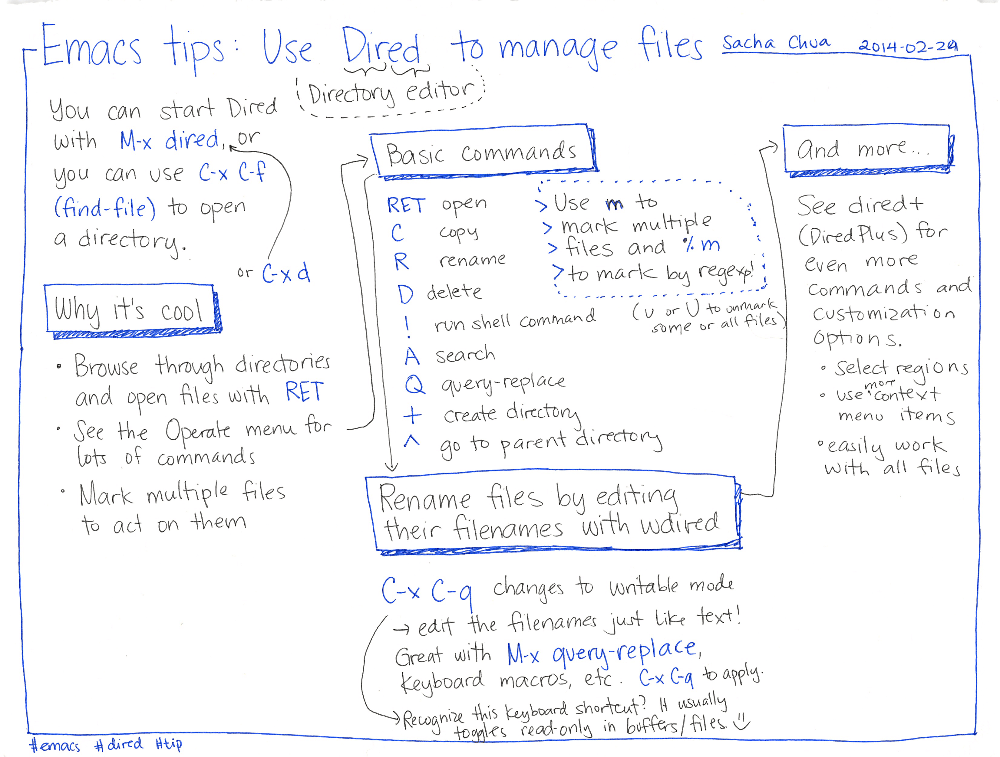
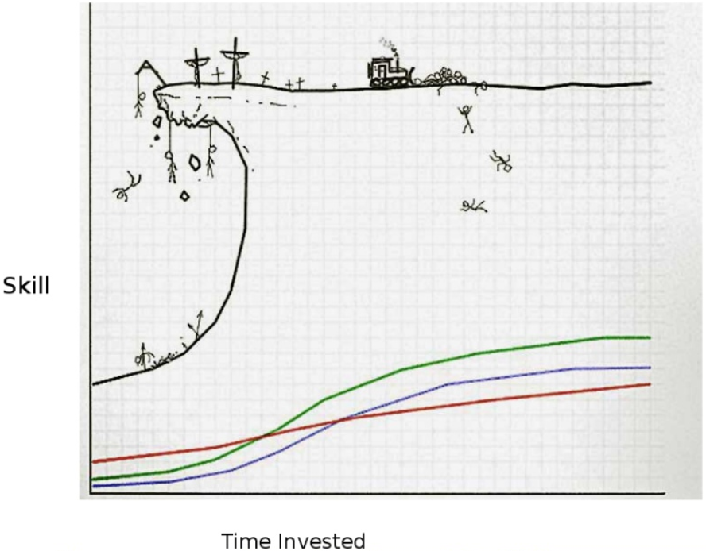

Emacs + AUCTeX
Table des matières
- 1. Aperçu
- 2. Bases pour utiliser Emacs
- 2.1. Terminologie Emacs
- 2.2. Ne pas utiliser la souris
- 2.3. Exemple de fichier LaTeX sous Emacs
- 2.4. Notation des raccourcis clavier
- 2.5. Manipuler un fichier
- 2.6. Manipuler un écran
- 2.7. Annuler
- 2.8. Couper / Copier / Coller
- 2.9. Chercher
- 2.10. Rechercher / remplacer
- 2.11. Manipuler des lignes
- 2.12. Mettre en forme du texte
- 2.13. Manipuler un buffer
- 2.14. Ligne de mode
- 2.15. Obtenir de l’aide
- 2.16. Configurer Emacs
- 2.17. Fonctionnalités supplémentaires
- 2.18. Helm (levier de commande)
- 2.19. Sauvegarde de la position du curseur
- 2.20. Vérification orthographique à la volée
- 2.21. Vérification syntaxique à la volée
- 2.22. Compilation LaTeX par défaut
- 3. Modes pour éditer du LaTeX
- 4. Fonctionnalités avancées
- 5. Conclusions
1 Aperçu
1.1 Description
Bienvenue dans le cours Emacs + AUC\TeX{}. Il contient la documentation de référence qui décrit comment écrire du code LaTeX avec :
- l’éditeur GNU Emacs et
- la librairie AUC\TeX{}.
Ces outils libres et gratuits vous permettent de produire facilement des documents PDF de haute qualité qui vont être affichés sur tous les ordinateurs exactement comme ils l’étaient sur le vôtre.
1.2 Caractéristiques et objectifs
Les avantages évidents d’utiliser Emacs + AUC\TeX{} sont d’être plus productif pour éditer du LaTeX.
À côté de fonctions standards comme la navigation aisée dans le document ou la vérification orthographique et syntaxique à la volée, Emacs offre des fonctionnalités avancées (et homogènes) pour tout type de fichiers. Par exemple :
- recherche incrémentale,
- édition de rectangles,
- macros,
- Helm.
1.3 Exigences
- Une version d’Emacs 25 (si possible).
- Une installation fonctionnelle de LaTeX est requise pour exporter vers du PDF. Si elle n’est pas encore installée sur votre système, installer TeX Live (par exemple).
1.4 Besoin de plusieurs outils dans votre boîte

1.5 Emacs intègre tous ces outils
- Left column BMCOL
- Très puissant
- Générique et spécialisé (environnement de développement pour beaucoup de langages, gestionnaire de fichiers, terminal shell, client mail, navigateur Web, client IRC, Tetris, etc.)
- Complètement extensible et personnalisable (en Lisp)
- Right column BMCOL

- End of columns B_ignoreheading
- Libre et gratuit
- Multi-plate-forme (Linux, MacOS, Windows)
1.6 Productivité = capacité à ÉDITER DU TEXTE
Emacs ne devrait pas être vu comme un éditeur : c’est un environnement de développement logiciel avec de puissantes capacités d’édition de texte. Et c’est même encore beaucoup plus que cela !
« Emacs outshines all other editing software in approximately the same way that the noonday sun does the stars. It is not just bigger and brighter; it simply makes everything else vanish. »
— Neal Stephenson,
In the Beginning was the Command Line (1998)
Emacs est mon outil le plus important !
2 Bases pour utiliser Emacs
2.1 Terminologie Emacs

2.2 Ne pas utiliser la souris
2.3 Exemple de fichier LaTeX sous Emacs

2.4 Notation des raccourcis clavier

- Touches spéciales (modificateurs) :
- \keys{S}
- Shift
- \keys{C}
- Control
- \keys{M}
- Meta (« Alt »)
- \keys{C-h} \keys{t} signifie
« maintenir \keys{\ctrl} en tapant \keys{h}, puis lâcher et taper \keys{t} » - \keys{M-x} pour exécuter une commande nommée (qui n’a pas de raccourci)
2.5 Manipuler un fichier
- \keys{C-x} \keys{C-f}
- Ouvrir un fichier (compléter le nom avec \keys{TAB})
- \repeatedkeys{C-x} \keys{C-s}
- Sauvegarder le fichier
- \repeatedkeys{C-x} \keys{C-w}
- Sauvegarder le fichier sous un autre nom
- \repeatedkeys{C-x} \keys{C-c}
- Quitter Emacs
2.6 Manipuler un écran
Les commandes suivantes servent à manipuler des écrans :
- \keys{C-v}
- Avancer d’un écran
- \keys{M-v}
- Reculer d’un écran
- \keys{C-l}
- Effacer l’écran et réafficher tout le texte autour du curseur, qui est placé au milieu de l’écran …
- \keys{C-l C-l}
- … texte autour du curseur placé au-dessus de l’écran
- \keys{C-l C-l C-l}
- … texte autour du curseur placé au-dessous de l’écran
2.7 Annuler
- \keys{C-g}
- Stopper une commande (ou débloquer Emacs quand il ne répond plus)
- \keys{C-x} \keys{u}
- Annuler la dernière modification1
2.8 Couper / Copier / Coller
- \keys{C-SPC}
- Marquer le début d’une région
- \keys{C-w}
- Couper
- \keys{M-w}
- Copier
- \keys{C-y}
- Coller
- \keys{M-y}
- Remplacer la région qui vient d’être collée par une région précédemment coupée ou copiée
Il existe un mode (CUA) qui permet d’émuler le \keys{C-x} / \keys{C-c} / \keys{C-v} mais il est perturbant.
2.9 Chercher
- \keys{C-s} (ou \keys{C-r})
Chercher en avant (ou en arrière)
\pause
Recherche incrémentale : Emacs recherche la première occurrence correspondant à chaque caractère entré.
\pause
Refaire \keys{C-s} ou \keys{C-r} pour aller sur l’occurrence suivante.
\pause
- \keys{M-s} \keys{o}
Montrer toutes les lignes contenant une correspondance pour une expression régulière
Pour atteindre une ligne donnée, cliquer dessus dans la fenêtre
*Occur*.
2.10 Rechercher / remplacer
- \keys{M-\%}
Remplacer une chaîne de caractères par une autre
\pause
Demande de confirmation :
- \keys{y}
- Remplacer cette occurrence, puis continuer la recherche d’autres occurrences.
\pause
- \keys{n}
- Sauter cette occurrence, mais continuer la recherche d’autres occurrences.
\pause
- \keys{.}
- Remplacer cette occurrence, puis quitter.
\pause
- \keys{!}
- Remplacer toutes les occurrences restantes sans plus demander de confirmation.
2.11 Manipuler des lignes
- \keys{M-g g}
- Déplacer le point vers un numéro de ligne donné
- \keys{C-k}
- Supprimer tous les caractères depuis le curseur jusqu’à la fin de la ligne
- \keys{M-;}
- Commenter
2.12 Mettre en forme du texte
- \keys{TAB}
- Indenter la ligne courante (pour la plupart des types de fichiers)
- \keys{M-q}
- Convertir une ligne de texte en un paragraphe multi-lignes
2.13 Manipuler un buffer
Emacs stocke le texte de chaque fichier dans un objet appelé « tampon » (buffer).
- \keys{C-x} \keys{b}
- Changer de buffer (compléter le nom avec \keys{TAB})
- \repeatedkeys{C-x} \keys{k}
- Supprimer le buffer courant (équivalent de « Fermer le fichier courant » dans un autre éditeur)
2.14 Ligne de mode
- Codage de caractères (
1= Latin 1,U= UTF-8, etc.)
- État du buffer, introduit par
-, suivi de--- Non modifié
**- Modifié (depuis la dernière sauvegarde)
- Nom du buffer
- Position relative (en pourcent, ou
TopouBottom) et numéro de la ligne courante - Un mode majeur pour éditer du texte (
Text,LaTeX, etc.) ou un langage de programmation (Python, etc.) - Plusieurs modes mineurs modifiant le mode majeur (
Flyspell,Auto Fill, etc.)

2.15 Obtenir de l’aide
- \keys{C-h} \keys{t}
- Accéder au tutorial d’Emacs
2.16 Configurer Emacs
- Fichier de configuration
~/.emacsou~/.emacs.d/init.el2 Ajout d’options manuellement :
;; Show the column number in each mode line. (column-number-mode 1)
- Ajout d’options automatiquement via \keys{M-x} \keys{customize} (ou menu \menu{Options > Customize Emacs})
2.17 Fonctionnalités supplémentaires
Il y a encore plein d’autres choses (non traitées ici) :
- fenêtres multiples affichées en même temps à l’écran
- cadres multiples
- etc.
\label{package-manager} Certaines proviennent de packages supplémentaires à installer en utilisant le package manager intégré depuis Emacs 24 (ELPA) :
- Taper \keys{M-x} \keys{list-packages} \keys{RET}
- Marquer le(s) package(s) à installer avec \keys{i}
- Appuyer sur \keys{x} pour lancer la procédure d’installation
2.18 Helm (levier de commande)
Rechercher un buffer
(global-set-key (kbd "C-x b") 'helm-buffers-list)Rechercher un fichier ou un buffer
(global-set-key (kbd "<f3>") 'helm-for-files)Afficher un menu de navigation contextuel au buffer courant (dans LaTeX, affichage des sectionnements avec sélection par expression régulière)
(global-set-key (kbd "<f4>") 'helm-imenu)Afficher des lignes contenant un certain motif (incrémental)
(global-set-key (kbd "C-o") 'helm-occur)Exécuter une commande Emacs
(global-set-key (kbd "M-x") 'helm-M-x)
2.19 Sauvegarde de la position du curseur
;; Automatically save place in each file. (require 'saveplace) (setq-default save-place t)
Quand vous ouvrez un fichier, le curseur va à la place où il était la dernière fois que vous l’avez ouvert.
2.20 Vérification orthographique à la volée
;; Spelling checker program. (setq ispell-program-name "aspell") ; Could be ispell or hunspell. ;; Default dictionary to use (if `ispell-local-dictionary' is nil, that ;; is if there is no local dictionary to use in the buffer). (setq ispell-dictionary "francais") ;; Enable on-the-fly spell checking. (add-hook 'text-mode-hook 'flyspell-mode)
- \keys{C-,}
- Aller à la prochaine erreur détectée.
- \keys{C-.}
- Corriger le mot sous le curseur.
- \keys{M-\$} ou \keys{C-c} \keys{\$}
- Ouvrir un menu avec différentes corrections possibles pour le mot sous le curseur.
2.21 Vérification syntaxique à la volée
(require 'flymake) (defun flymake-get-tex-args (file-name) (list "pdflatex" (list "-file-line-error" "-draftmode" "-interaction=nonstopmode" file-name))) (add-to-list `flymake-err-line-patterns '("Runaway argument?" nil nil nil)) ; Fixes unbalanced braces in LaTeX files. (add-hook 'LaTeX-mode-hook 'flymake-mode)
- \keys{M-x} \keys{flymake-popup-current-error-menu} \keys{RET}
- Afficher un menu avec les erreurs/avertissements.
- \keys{M-x} \keys{flymake-goto-next-error} \keys{RET}
- Aller vers la prochaine erreur dans le ring err.
2.22 Compilation LaTeX par défaut
(defun TeX-default () "Choose the default command from `C-c C-c'." (interactive) (TeX-save-document "") ; Or just use `TeX-save-query'. (execute-kbd-macro (kbd "C-c C-c RET"))) ;; Rebind the "compile command" to default command from `C-c C-c' ;; (in LaTeX mode only). (define-key LaTeX-mode-map (kbd "<f9>") 'tex-default)
3 Modes pour éditer du LaTeX
3.1 AUC\TeX{}
- Description B_frame
- Édition facilitée
- Indentation automatique
- Coloration syntaxique
- Compilation d’un document LaTeX directement dans Emacs
- Navigation d’erreur en erreur
- Édition facilitée
- Appariage de certains caractères B_frame
(defun insert-parentheses () "Insert parentheses and go between them." (interactive) (insert "()") (backward-char 1)) (global-set-key "(" 'insert-parentheses) (defun insert-brackets () "Insert brackets and go between them." (interactive) (insert "[]") (backward-char 1)) (global-set-key "[" 'insert-brackets) (defun insert-braces () "Insert curly braces and go between them." (interactive) (insert "{}") (backward-char 1)) (global-set-key "{" 'insert-braces)
- Mise en forme du texte B_frame
- \keys{C-c} \keys{C-f} \keys{C-b}
\textbf{...}- \repeatedkeys{C-c} \repeatedkeys{C-f} \keys{C-i}
\textit{...}- \repeatedkeys{C-c} \repeatedkeys{C-f} \keys{C-e}
\emph{...}- \repeatedkeys{C-c} \repeatedkeys{C-f} \keys{C-s}
\textsl{...}- \repeatedkeys{C-c} \repeatedkeys{C-f} \keys{C-r}
\textrm{...}- \repeatedkeys{C-c} \repeatedkeys{C-f} \keys{C-f}
\textsf{...}- \repeatedkeys{C-c} \repeatedkeys{C-f} \keys{C-t}
\texttt{...}- \repeatedkeys{C-c} \repeatedkeys{C-f} \keys{C-c}
\textsc{...}- \repeatedkeys{C-c} \repeatedkeys{C-f} \keys{C-h}
- Afficher un menu avec les différentes possibilités
- Insertion de sections B_frame
- \keys{C-c} \keys{C-s}
Insérer une section :
\part,\chapter,\section,\subsection,\subsubsection,\paragraph,\subparagraph.
Compléter le nom avec \keys{TAB}.
- Insertion de commandes B_frame
- \keys{C-c} \keys{RET}
Insérer une macro TeX.
Compléter le nom avec \keys{TAB}.
- Insertion d’environnements B_frame
- \keys{C-c} \keys{C-e}
Insérer un environnement (
\begin{...}..\end{...}).Compléter le nom avec \keys{TAB}.
Avec le préfixe \keys{C-u}, remplacer l’environnement dans lequel le curseur est.
Dans un environnement de type
itemize:- \keys{M-RET}
- Insérer un nouvel élément (
\item). - \keys{C-c} \keys{]}
- Insérer un
\end{...}pour fermer l’environnement courant.
- Compilation B_frame
- \keys{C-c} \keys{C-c}
- Exécuter une commande sur le document.
- BibTeX
- Exécuter BibTeX sur le fichier
- Biber
- Exécuter Biber
- Index
- Créer un fichier d’index (exécuter
makeindex) - LaTeX
- Exécuter LaTeX sur le fichier (en mode sans interruption)
- View
- Visualiser le document DVI ou PDF (avec ré-actualisation à chaque compilation)
Compiler vers PDF par défaut :
;; Use PDF mode by default (instead of DVI). (setq-default TeX-PDF-mode t)
- Erreurs B_frame
- \keys{C-c} \keys{C-l}
- Afficher les messages de compilation
- \repeatedkeys{C-c} \keys{`}
Aller à la prochaine erreur détectée :
Le caractère \keys{`} étant pénible à taper, on peut remplacer cette combinaison de touches par la touche \keys{f10} avec :
(global-set-key (kbd "<f10>") 'TeX-next-error)
- Documentation TeX B_frame
- \keys{C-c} \keys{?}
- Trouver la documentation de la chose (package, commande ou document) sur lequel le curseur est
- Activation d’AUC\TeX{} B_frame
Installation via le
intégré à Emacs.
Vous pouvez détecter l’activation réussie d’
AUCTeXaprès avoir chargé un fichier LaTeX : ajout d’un menuCommand. - Quelques variables d’intérêt B_frame
;; Don't assume that the file is a master file itself. (setq-default TeX-master nil) ;; Don't ask user for permission to save files before starting TeX. (setq TeX-save-query nil) ;; Enable parse on load (if no style hook is found for the file). (setq TeX-parse-self t) ;; Enable automatic save of parsed style information when saving the buffer. (setq TeX-auto-save t)
- Formatage B_frame
- \keys{C-c} \keys{C-q} \keys{C-e}
- Formater l’environnement
- \repeatedkeys{C-c} \repeatedkeys{C-q} \keys{C-p}
- Formater le paragraphe
- \repeatedkeys{C-c} \repeatedkeys{C-q} \keys{C-r}
- Formater la région
- \repeatedkeys{C-c} \repeatedkeys{C-q} \keys{C-s}
- Formater la section
3.2 RefTeX
- Description B_frame
RefTeX est un mode mineur (écrit par Carsten Dominik3) qui améliore AUC\TeX{}, en offrant un support pour :
\label,\ref,\cite,\indexet- l’ajout de macros quelconques (\keys{C-c} \keys{RET}, avec \keys{TAB} pour compléter)
- Table des matières B_frame
- \keys{C-c} \keys{=}
Afficher une table des matières du document entier (multifichier) avec possibilité de navigation.
Presser la lettre \keys{l} va afficher tous les labels et toutes les citations bibliographiques.
- Références B_frame
- \keys{C-c} \keys{(}
- Créer un label.
- \repeatedkeys{C-c} \keys{)}
Référencer un label.
En référençant, vous avez un menu avec tous les labels d’un certain type et le contexte de leur définition.
Le label sélectionné peut être inséré comme une macro
\ref(via \keys{C-m}),\pageref,\autorefou\autopageref.
- Références croisées B_frame
- \keys{C-c} \keys{\&}
Visualiser la référence croisée de la macro courante.
- Sur une
\ref, montre le\labelcorrespondant - Sur un
\label, montre une\refqui utilise cette clé (appels supplémentaires pour montrer les autres\ref)
- Sur un
\index, montre d’autres places utilisant la même entrée d’index
- Sur une
- Citations bibliographiques B_frame
- \keys{C-c} \keys{[} \keys{REGEXP}
- Créer une citation bibliographique (insérée comme une macro
\cite) en la choisissant à partir d’une liste formatée d’articles de votre base BibTeX.
- Index B_frame
- \keys{C-c} \keys{/}
- Créer une entrée d’index (avec le mot courant ou la sélection courante).
- \repeatedkeys{C-c} \keys{>}
- Afficher l’index compilé.
- Promotion / « démotion » de niveau B_frame
- \keys{<}
- Promouvoir4 la section courante, ou toutes les sections dans la région courante.
- \keys{>}
- « Démouvoir » la section courante, ou toutes les sections dans la région courante.
- Activation de RefTeX B_frame
(add-hook 'LaTeX-mode-hook 'reftex-mode) ; With AUCTeX LaTeX mode. ;; Turn all plug-ins on. (setq reftex-plug-into-AUCTeX t) ;; Use a separate selection buffer for each label type -- so the ;; menu generally comes up faster. (setq reftex-use-multiple-selection-buffers t)
3.3 Preview-latex
- Description B_frame
Prévisualisation WYSIWYG5 de maths, figures, tableaux, graphiques, etc. directement dans le buffer source (sous forme d’images PNG)
Vous pouvez détecter l’activation réussie de
preview-latexaprès avoir chargé un fichier LaTeX : ajout d’un menuPreview. - Prévisualisation dans la source B_frame
;; (setq preview-image-type 'png) ; 'jpeg en cas de problème ? (setq preview-gs-command (cond ((eq system-type 'windows-nt) "C:/texlive/2014/tlpkg/tlgs/bin/gswin32c.exe") (t "/usr/bin/gs")))
Support des images PNG dans Emacs :
- Besoin de
libpng16.dllou delibpng14-14.dll
(et éventuellement dezlib1.dll). - Informations supplémentaires :
- Fichier
README.W32(ount/INSTALL) pour Windows. - Variable
image-library-alist(liste des DLL par type d’image).
- Fichier
Vérification du support dans votre Emacs :
M-: (image-type-available-p 'png) RET
Raccourcis :
- \keys{C-c} \keys{C-p} \keys{C-s}
- Prévisualisation de la section
- \repeatedkeys{C-c} \repeatedkeys{C-p} \keys{C-b}
- Prévisualisation du buffer
- Besoin de
4 Fonctionnalités avancées
4.1 Orgtbl
Éditer un tableau dans la source LaTeX avec les facilités d’édition Org :
- Utiliser un environnement
comment - Appuyer sur \keys{C-c} \keys{C-c} pour exporter le tableau en LaTeX
\usepackage{comment} \begin{document} \begin{longtable}{rll} % BEGIN RECEIVE ORGTBL my-long-table % END RECEIVE ORGTBL my-long-table \end{longtable} % \begin{comment} #+ORGTBL: SEND my-long-table orgtbl-to-latex :splice t :escape t |---------------------+---------+--------| | date | session | remark | |---------------------+---------+--------| | \endhead 2014-06-18 | s140618 | | \end{comment} %
4.2 Message de Denis Bitouzé B_fullframe
\Huge{Super présentation, \\ mais on doit terminer à temps}
4.3 Outline
Schéma (décrivant la structure)
;; Turn on Outline mode. (defun turn-on-outline-minor-mode () (outline-minor-mode 1)) (add-hook 'LaTeX-mode-hook 'turn-on-outline-minor-mode) (add-hook 'latex-mode-hook 'turn-on-outline-minor-mode) ;; Bind the outline minor mode functions to an easy to remember prefix ;; key (more accessible than the horrible prefix `C-c @'). (setq outline-minor-mode-prefix (kbd "C-c C-o")) ; Like in nXML mode.
- \keys{C-c} \keys{C-o} \keys{C-l}
- Cacher les feuilles.
- \repeatedkeys{C-c} \repeatedkeys{C-o} \keys{C-n}
- Suivant.
- \repeatedkeys{C-c} \repeatedkeys{C-o} \keys{C-p}
- Précédent.
- \repeatedkeys{C-c} \repeatedkeys{C-o} \keys{C-a}
- Montrer tout.
Commandes outline-demote et outline-promote ???
4.4 Édition de rectangles
- \keys{C-x} \keys{r} \keys{k}
- Couper le texte de la « région-rectangle »
- \repeatedkeys{C-x} \repeatedkeys{r} \keys{M-w}
- Copier le rectangle sélectionné
- \repeatedkeys{C-x} \repeatedkeys{r} \keys{y}
- Coller le rectangle copié
- \repeatedkeys{C-x} \repeatedkeys{r} \keys{d}
- Supprimer le texte du rectangle
- \repeatedkeys{C-x} \repeatedkeys{r} \keys{t}
- Remplacer chaque ligne d’un rectangle par une chaîne de caractères donnée
- \repeatedkeys{C-x} \repeatedkeys{r} \keys{C-h}
- Afficher les raccourcis existants pour les commandes « rectangle »
4.5 Enregistrer et exécuter une macro
- \keys{C-x} \keys{(}
- Débuter l’enregistrement d’une macro clavier.
- \repeatedkeys{C-x} \keys{)}
- Arrêter l’enregistrement de la macro clavier.
- \repeatedkeys{C-x} \keys{e}
Exécuter la dernière macro enregistrée.
Après un \keys{C-x} \keys{e} initial, on peut utiliser la touche \keys{e} toute seule.
Exemple : remplacement (des item) d’un environnement itemize par un
environnement description.
4.6 M-x ediff-buffers

4.7 Dired

4.8 Dictionary mode
;; Client for rfc2229 dictionary servers. (when (require "dictionary-autoloads" nil t) (global-set-key (kbd "C-c d s") 'dictionary-search) (global-set-key (kbd "C-c d l") 'dictionary-lookup-definition) (global-set-key (kbd "C-c d m") 'dictionary-match-words) (with-eval-after-load "dictionary" (global-dictionary-tooltip-mode 1) ;; ;; Server contacted for searching the dictionary. ;; (setq dictionary-server "localhost") ))
4.9 Highlight line
(require 'hl-line) (hl-line-mode)
5 Conclusions
5.1 Continuer à apprendre
- Lire la documentation (GNU Emacs, EmacsWiki, etc.)
- Étudier les configurations des autres (Emacs Leuven, Dot emacs, etc.)
- Regarder des tutoriels vidéo (Emacs Rocks, etc.)
5.2 Ne pas se laisser intimider
… par la courbe d’apprentissage

Apprendre Emacs n’est pas facile (n’est pas compliqué non plus),
mais vous ne le regretterez jamais !
5.3 Coordonnées
Consultant IT @ Pirilampo SPRL
Auteur @ Pirilampo.org
\vfill{}
- Left column BMCOL
GitHub fniessenLinkedIn fabrice-niessenSlideShare fniessenTwitter f_niessen - Right column BMCOL
Vous avez des idées ? Contactez-moi !